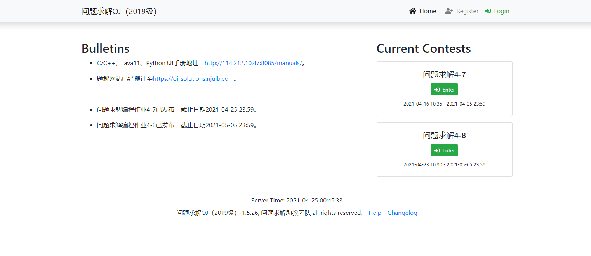
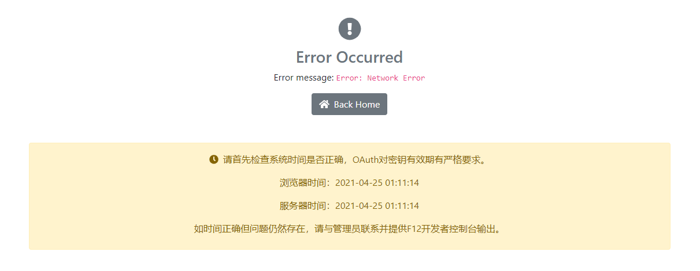
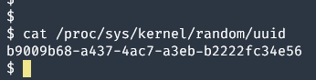

v2ray配置代理服务器
条评论清明节回老家一趟，没有校园网。本以为用南大提供的EasyConnect服务就可以从公网登上校园网做OJ，没想到这个软件在Android手机上可以以极慢的速度连接，在Windows上一直连接不上，在Linux上…甚至安装不了。
最后我的办法：在手机上看题；在电脑上写代码；发到手机上，复制粘贴提交。对于Lab这种要git的……我只能骂这个学校VPN到底是个什么$hit。
在那之后我的新机计划正式启动了，这就给了我极大的施展空间（所以说这台主机到底够我氵多少篇博客）
从校外访问OJ，第一个方案是端口映射
端口映射
上篇文章中介绍了proxyer，我们用proxyer将114.212.10.47:8085映射到公网服务器上的8085端口，然后尝试访问，Boom！成功了！

但是点开login，就会看到：

由于某些原因（Aunt讲了但是我忘了），这种访问方式无法获得OAuth的授权。
于是把目光转向了v2Ray代理，从校内主机访问网站总不可能被拒绝吧？
v2ray
因为时间隔了半个月，所以自己也不知道当时配置的时候到底踩了哪些坑了，就当做一个正确的流程来参考吧。
首先是安装v2ray。对于ArchLinux而言，直接sudo pacman -S v2ray就完事了。
其他的开发版就直接参考项目文档。
关于v2ray的详细配置教学，可以参考这个文档。
安装完成之后，我的配置文件在/etc/v2ray/config.json，先上配置：
1 | { |
首先，log是指定日志文件的路径；
v2ray 使用 inbound 和 outbound 的传入和传出的结构，代表数据包的流动方向。我们就可以把 v2ray 当作一个盒子。inbound 接受来自客户端的请求，outbound 则将数据包发到目标去。
inbounds 入站规则，依次配置端口号、协议、对客户端的约定。其中 id 字段只需要自己随便生成一个UUID往里填就完事了。使用命令：
1 | cat /proc/sys/kernel/random/uuid |

outbound 出站规则，第一个为默认规则，配置协议为 freedom，即为直连。
保存配置文件，v2ray & 启动代理。用 proxyer 工具将刚才配置填写的端口映射到公网服务器上的任意端口，服务端的建设就算是完成了。
客户端，以安卓端的 V2rayNG 为例，选择手动输入[Vmess]，依次填入服务器地址，端口号，刚才生成的UUID。alterId 填4，加密方式 auto，传输协议 TCP。保存并连接。这里注意，如果是要访问内网ip，在路由模式上就要选择全局代理，而不是绕过局域网地址。
然后就可以正常登录上 Online Judging 啦！
yls的肯定：
<EOF>